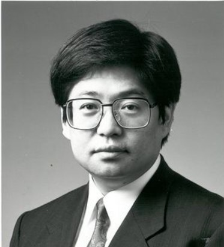

Historia
La microinformática moderna tiene sus inicios hace muchísimos años. Uno de los padres de lo que hoy en día conocemos como informática es el estándar MSX. Kazuhiko Nishi propuso MSX, en los años 80, como un intento de crear un único estándar para toda la industria de ordenadores personales. Inspirado por el éxito de VHS como un estándar de grabadoras de vídeo, muchos fabricantes electrónicos japoneses construyeron promovieron los ordenadores MSX. Cualquier pieza de hardware o software con el logotipo de MSX en él, era compatible con los productos MSX de otros fabricantes.
Kazuhiko Nishi
undador del estándar MSX.
